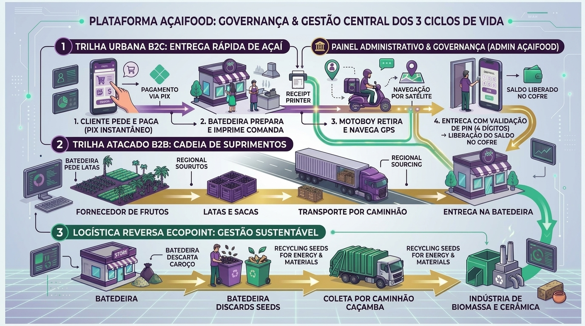

Supervisão, Auditoria Financeira, Split Asaas, Controle de PIN e Gestão dos 3 Ciclos de Vida

Aprovação de batedeiras, motoristas e fornecedores, monitoramento do radar GPS e resolução de chamados de suporte.
Controle das liquidações Asaas, retenção preventiva no Cofre até validação presencial do PIN de 4 dígitos na entrega.
Auditoria das cotações de latas, fretes de transporte pesado e confirmação de descarregamento nas lojas parceiras.
Rastreabilidade do volume de caroços recolhidos por caminhões caçamba para indústrias de cerâmica, biomassa e adubo.